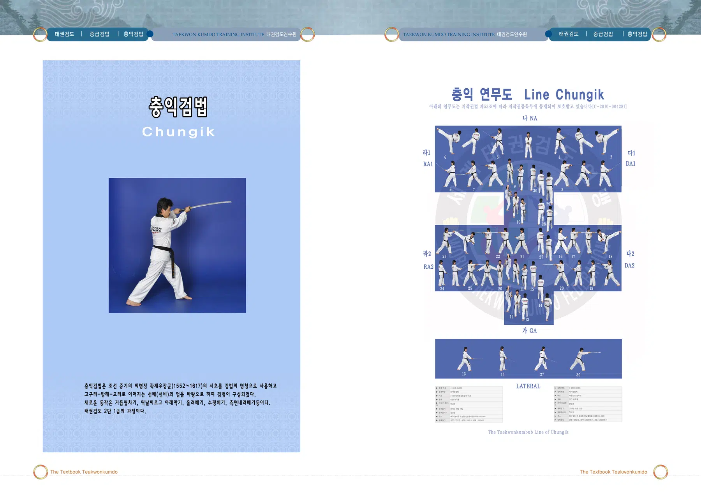
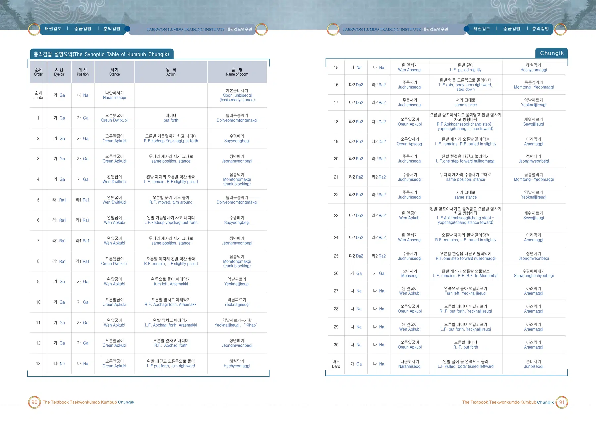
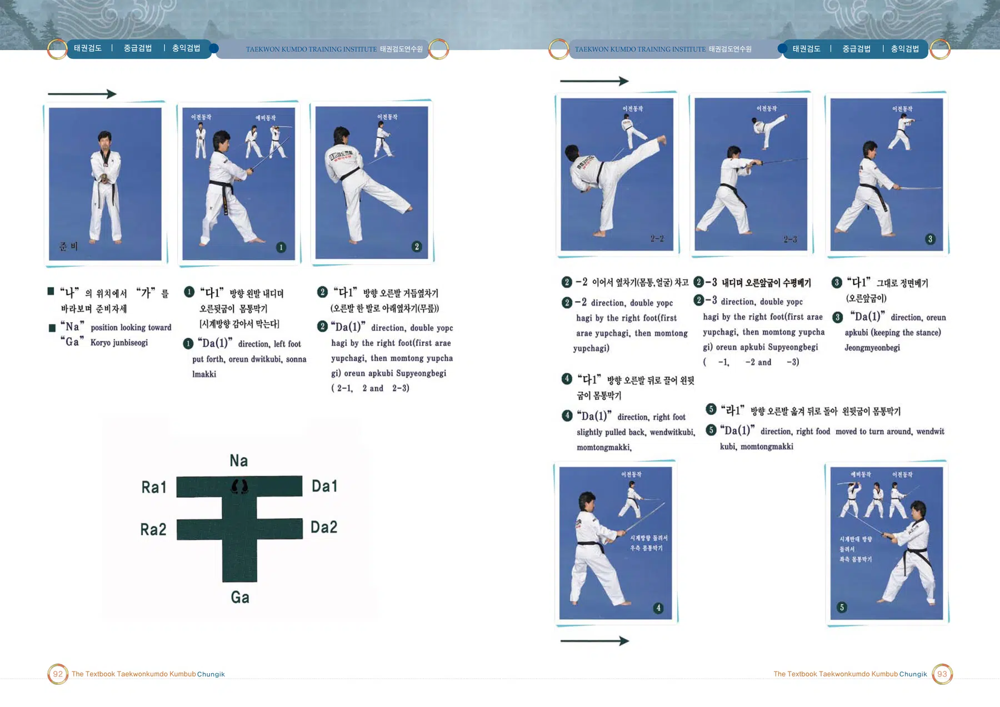
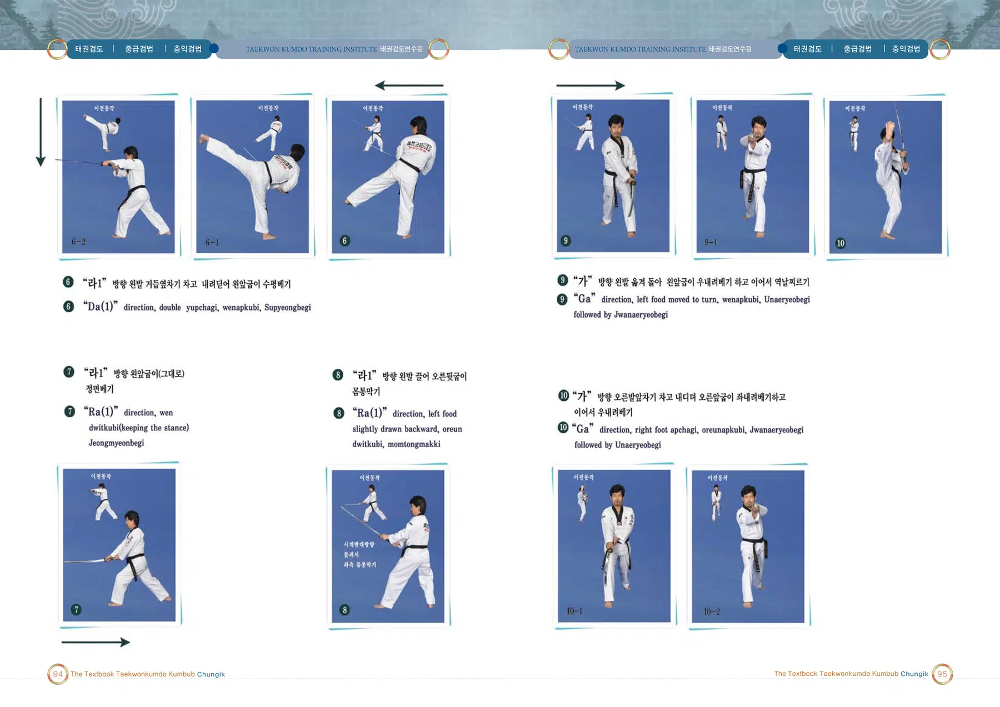
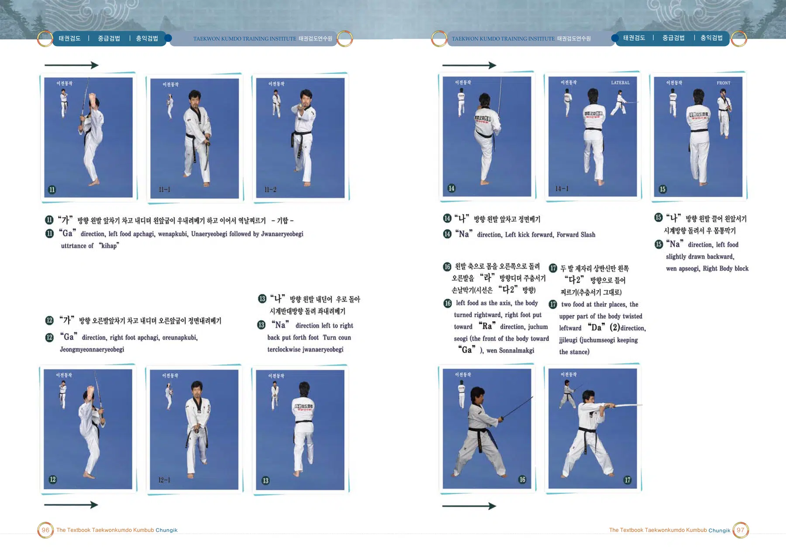
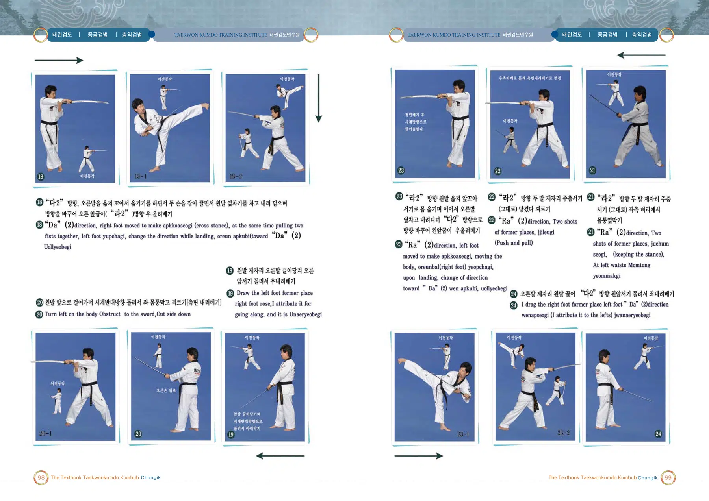
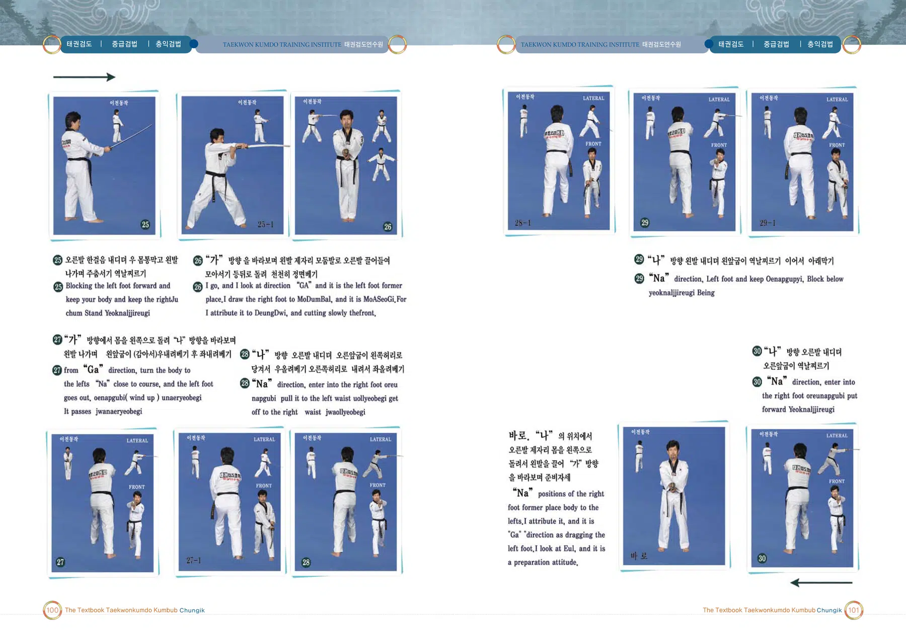

충익검법
곽재우 장군의 시호에서 이름을 따온 검법
출처: 태권검도 교본. 아래 설명은 제공된 초안의 뜻풀이 요약이며, 원문은 교본 이미지에서 확인할 수 있습니다.
충익검법의 뜻과 상징
조선 중기의 의병장 곽재우 장군의 시호를 명칭으로 사용하며 선비의 정신을 바탕으로 구성된 검법이다.
태권검도 교본 인쇄 210쪽의 설명을 바탕으로 요약한 해설입니다.
충익검법 교본 자료
이미지를 누르면 확대됩니다. 확대 화면에서는 좌우로 이동하여 동작과 설명을 확인하세요.






